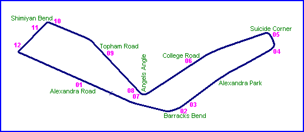

Alexandra Park, Pietermaritzburg, South Africa
Type: Street/Parkland Circuit
Length: 3.400 Miles // 5.472 km
Used: Late 1940's to 1953
Situated in Pietermaritzburg (Natal province). This 3.4 mile circuit was established in the late 1940’s on streets within the center of this town. Races were held until 1953. All the roads are still in use today.
|| Contents | Alexandra Road to College Road | Angels Angle to Final Corner || Home ||
Click on the hyperlinks above to view photographs of that
section.
The numbers and arrows on the map represent the location of where each of the
photographs were taken.

Return to racingcircuits.net's Photo
Archive Main Index
Photographs kindly supplied by Paul Minnaar, with additional information by Marius Matthee. Reproduced here with kind permission.